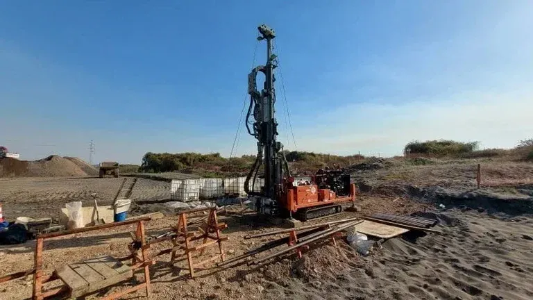

Our team provides comprehensive geotechnical services across London, from site characterization and foundation design to subsurface investigation and construction monitoring. We understand the unique demands of the city’s dense urban environment, where existing infrastructure and variable ground conditions require careful planning. Our work covers a full spectrum of capabilities, including soil mechanics studies, retaining wall design, and slope stability analysis, ensuring that every project is built on a reliable geotechnical foundation. By integrating local knowledge with rigorous engineering practices, we deliver solutions that are both practical and code-compliant, supporting developments from high-rise towers to transport infrastructure.

Scope of work
Area-specific notes
Our firm brings consolidated regional experience to every London project, having worked extensively with the London Clay and other local formations. We maintain calibrated laboratory equipment and field instrumentation to deliver accurate, code-compliant reports. Our team coordinates directly with local contractors, planning authorities, and building control bodies to streamline approvals and mitigate risks. By staying current with evolving standards and local practices, we provide geotechnical solutions that are both technically sound and contextually appropriate, supporting safe and efficient development across the capital.
Watch how it works
Standards used
Geotechnical work in the UK is governed by Eurocode 7 (EN 1997) for geotechnical design, alongside British Standards such as BS 5930 for site investigation and BS 8004 for foundations. Field testing follows BS EN ISO standards, including BS EN ISO 22476-3 for standard penetration tests (SPT) and BS EN ISO 22476-9 for shear wave velocity measurements. Laboratory testing adheres to BS 1377 methods for soil classification and strength parameters. These standards ensure consistency and reliability across all project phases, from initial ground investigation to final compliance reporting.
Q&A
What are the most common geotechnical challenges for new developments in London?
Developments in London frequently encounter the London Clay, which can swell or shrink with moisture changes, affecting shallow foundations and pavements. Made ground from historical activities may contain obstructions or contaminants, requiring careful investigation. Deep excavations often face high groundwater pressures in deeper aquifers, necessitating solid dewatering or waterproofing designs. Additionally, adjacent structures and underground services demand precise monitoring to avoid settlement or damage.
How does the presence of the London Clay influence foundation design?
London Clay is a stiff overconsolidated clay with high bearing capacity but significant shrink-swell potential. For shallow foundations, designs must account for seasonal moisture changes, often using reinforced rafts or strip footings with proper depth. Deep foundations, such as piles, rely on the clay’s end-bearing and shaft friction, but require careful assessment of its fissured nature and potential for long-term creep. Ground movement monitoring is essential for sensitive structures.
What regulatory approvals are needed for geotechnical work in London?
Geotechnical investigations in London must comply with the Building Regulations 2010, particularly Part A (Structure) and Part C (Site Preparation). Planning permissions often require a preliminary risk assessment and ground investigation report. For sites near watercourses or in flood zones, the Environment Agency may impose additional requirements. Local borough councils also have specific guidelines for piling, excavations, and contamination testing.
What typical project types require geotechnical input in London?
Common projects include high-rise residential towers, commercial office buildings, transport infrastructure like Crossrail and underground stations, and basement extensions for existing properties. Brownfield redevelopment is frequent, requiring contamination assessment and Improvement. Retaining walls and slope stability analyses are needed for cut-and-cover excavations and embankments. All benefit from a thorough understanding of local geology and existing services.